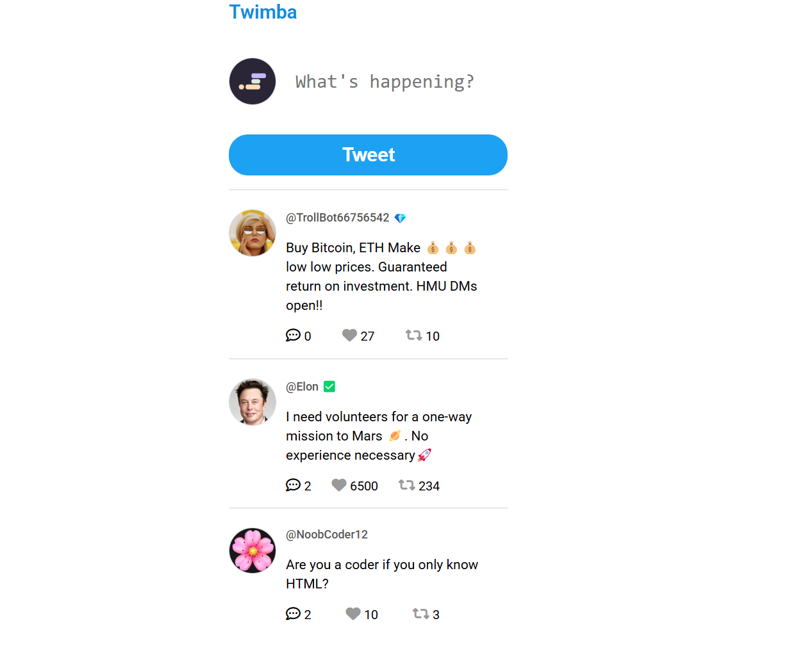

DOM manipulation
Creating and updating page content dynamically in response to user actions using JavaScript.
Featured Project / Front-End Development
An interactive social-feed web application built with HTML, CSS, and JavaScript.

Overview
Twimba is a JavaScript social-feed application I built as part of the Scrimba JavaScript course. Inspired by microblogging platforms, it allows users to create short posts, interact with content, and participate in conversations through replies.
Users can compose and publish posts, like existing posts, and add replies. JavaScript dynamically renders the feed and updates the interface in response to user interactions, creating an interactive experience without requiring a page reload for each action.
Building Twimba strengthened my understanding of DOM manipulation, event listeners, arrays, objects, and dynamic HTML rendering. It also helped me practice connecting user interactions with application data and organizing JavaScript logic to make interface updates predictable and maintainable.
Development Process
Creating and updating page content dynamically in response to user actions using JavaScript.
Using event listeners to support post creation, likes, and replies while responding to user input.
Using arrays and objects to represent posts, manage their properties, and render feed content.